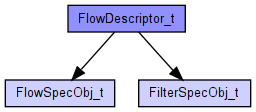
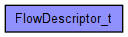

Intserv/RSVP: Flow Descriptor Structure
The following diagram shows usage relationships between types. Unresolved types are missing from the diagram. Click here to see the full picture.
The following diagram shows inheritance relationships for this type. Unresolved types are missing from the diagram. Click here to see the full picture.
| Name | Type | Description |
|---|---|---|
| RRO | IPAddressVector | |
| Filter_Spec_Object | FilterSpecObj_t | |
| label | int | |
| Flowspec_Object | FlowSpecObj_t |
// // Intserv/RSVP: Flow Descriptor Structure // struct FlowDescriptor_t { FlowSpecObj_t Flowspec_Object; FilterSpecObj_t Filter_Spec_Object; IPAddressVector RRO; int label; }